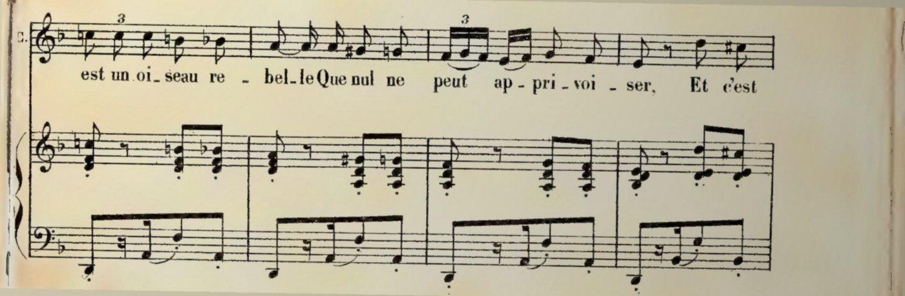
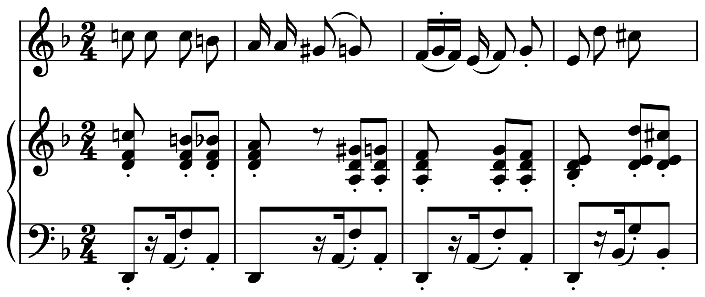

포트폴리오 · 종이 악보개인 프로젝트
사진 한 장을
악보 파일로

악보 파일

「하바네라」 1883년 판 · 사진 효과는 설명용 · 아래는 실제 판독
포트폴리오 · 종이 악보개인 프로젝트
종이 악보를 일일이
손으로 입력하기가
너무 힘들었습니다
그래서 폰으로 찍기만 하면 악보 파일이 되는 프로그램을 직접 만들었습니다.
사진 인식
마디 인식
박자 인식
음표 인식
악보 만들기
완료
악보 파일
「하바네라」 1883년 판 · 사진 효과는 설명용 · 아래는 실제 판독
종이 악보고치는 과정
어려웠던 점
AI가 읽은 악보는 사진과 달랐습니다. 그래서 프로그램으로 단계를 나눠 고쳤습니다.
사진

AI 사진 인식
프로그램으로 음 고치기
프로그램으로 표시 붙이기
1차는 실제 판독 · 2·3차는 설명용 · 「하바네라」 7마디
종이 악보여러 번 읽기
한 번에 못 읽으면
여섯 번 읽혔습니다
같은 악보를 여섯 가지 모양으로 바꿔 읽혔습니다. 틀리는 마디가 매번 달라서, 마디마다 잘 읽힌 결과만 골라 합쳤습니다.
칸 하나 = 한 마디잘 읽힘틀림
사진과 칸 무늬는 설명용
첼로 악보결과
사람이 손댈 마디
36개에서 5개로
인쇄 악보를 폰으로 찍은 왈츠 219마디입니다. 한 가지 고칠 때마다 정답 악보와 자동으로 비교해 줄었는지 확인했습니다.
사람이 손댈 마디219마디 중
처음36
34
15
9
지금5
남은 곳 사진과 결과를 나란히 AI에게 보여 주고 틀린 그림 찾기를 시킵니다.
쓰는 곳 연주를 듣고 악보를 넘겨 주는 제 프로그램에 이 악보들을 넣어 씁니다.
아직 안 됨 15도 넘게 기울여 찍은 사진은 거의 못 읽습니다.
실제 기록 · 왈츠 첼로 파트 사진 3장